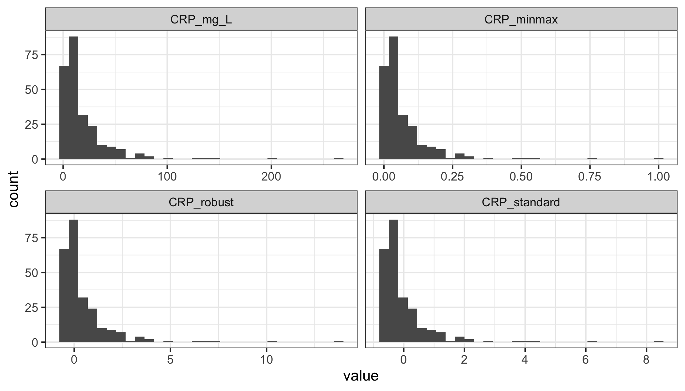
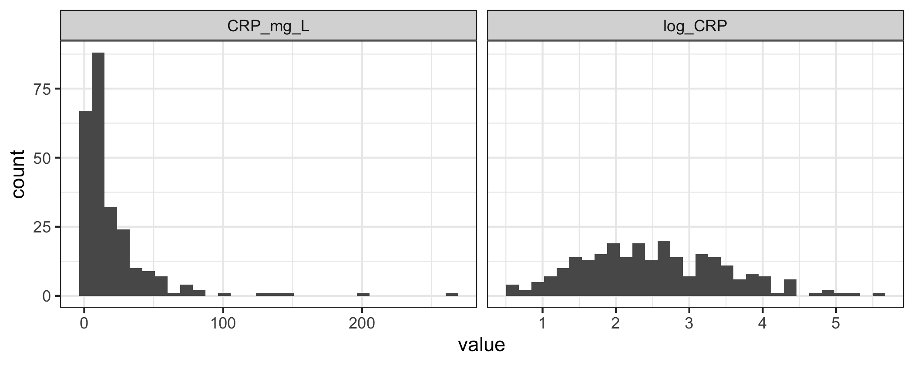
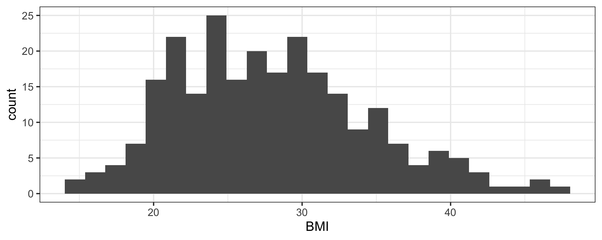
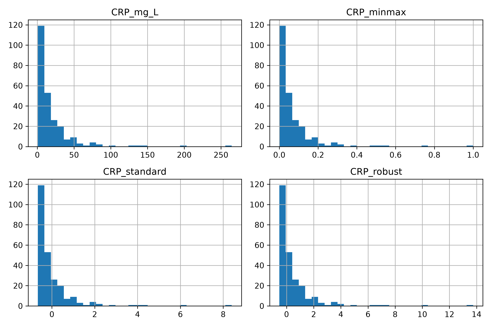
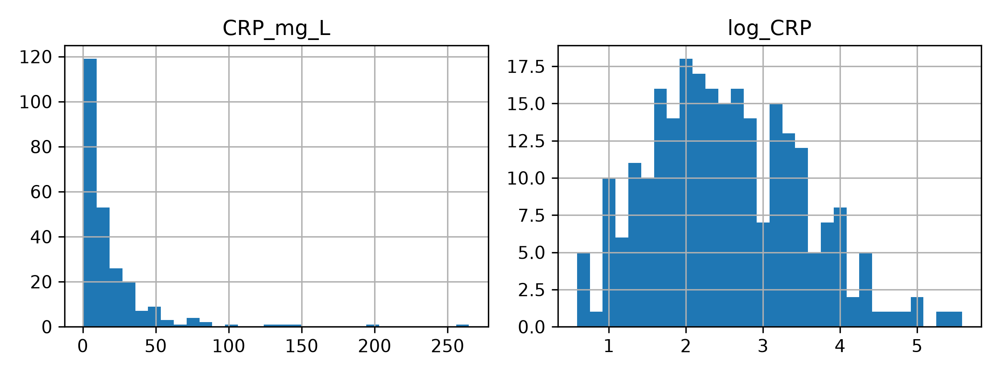
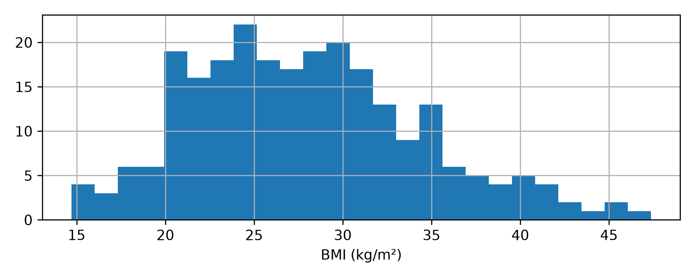

# Packages for this exercise. If one is missing, remove the # and run this line once:
# install.packages(c("tidyverse"))
library(tidyverse)
hospital <- read_csv("data/hospital_admissions.csv")Exercise 2.5 — Scaling, transformations and feature engineering
Download this exercise as a notebook: R Markdown (.Rmd) for R, or Jupyter (.ipynb) for Python. Each holds the text and every code cell of that language, with the blanks left for you to fill in.
Overview
In this exercise, you will explore different scaling methods, apply transformations to numerical variables, and create new features through feature engineering, all essential steps in preparing data for downstream data analysis.
The scenario
We are continuing with the hospital admissions data to predict length of stay. Its variables are measured in different units: age in years, blood pressure in mmHg and C-reactive protein (CRP) in mg/L.
This is the same file as in Exercise 2.4. If you do not have it yet, download hospital_admissions.csv into your data folder.
CRP is a marker of inflammation. Most patients have relatively low values, but some have very high measurements. This exercise looks at how different scaling methods handle those values, how a transformation changes a distribution, and how to create a clinically useful feature.
1. Scaling: three different approaches
Compare Min-Max, Standard and Robust scaling.
Lets first recap:
Min–Max scaling
\[ x_{\text{scaled}} = \frac{x - x_{\min}}{x_{\max} - x_{\min}} \]
Subtract the minimum and divide by the range. Values in the data used to fit the scaler fall between 0 and 1.
Standard scaling (Z-score)
\[ x_{\text{scaled}} = \frac{x - \bar{x}}{s} \]
Here, \(\bar{x}\) is the mean and \(s\) is the standard deviation. The scaled variable has mean 0 and standard deviation 1.
Robust scaling
\[ x_{\text{scaled}} = \frac{x - \operatorname{median}(x)}{\operatorname{IQR}(x)} \]
Here, \(\operatorname{IQR}(x) = Q_{75} - Q_{25}\) is the interquartile range: the difference between the 75th and 25th percentiles. The scaled variable has median 0 and IQR 1. This method is less sensitive to extreme values.
From a calculation to a function
To apply Min-Max scaling to CRP, we can write the calculation directly:
hospital |>
mutate(
CRP_scaled = (CRP_mg_L - min(CRP_mg_L)) /
(max(CRP_mg_L) - min(CRP_mg_L))
)#> # A tibble: 250 × 12
#> patient_id admission_type age height_cm weight_kg systolic_BP heart_rate
#> <chr> <chr> <dbl> <dbl> <dbl> <dbl> <dbl>
#> 1 H001 Emergency 77 174 80.8 144 84
#> 2 H002 Elective 44 180 80.2 101 76
#> 3 H003 Elective 52 172 72.5 110 80
#> 4 H004 Emergency 56 173 66 153 88
#> 5 H005 Emergency 79 167 73.6 153 82
#> 6 H006 Elective 70 163 57.2 122 84
#> 7 H007 Emergency 54 159 93.8 139 74
#> 8 H008 Emergency 81 156 53.7 128 78
#> 9 H009 Elective 48 156 86.4 128 89
#> 10 H010 Elective 66 179 94.9 144 87
#> # ℹ 240 more rows
#> # ℹ 5 more variables: creatinine <dbl>, CRP_mg_L <dbl>, smoking_status <chr>,
#> # length_of_stay <dbl>, CRP_scaled <dbl>To reuse this calculation, we can give it a name by creating a function:
minmax <- function(x) {
(x - min(x)) / (max(x) - min(x))
}A function takes an input, performs a calculation and returns the result. Here, x is a placeholder for the numerical column we want to scale. R automatically returns the result of the last calculation inside { }.
We can now call our function inside mutate():
hospital |>
mutate(
CRP_scaled = minmax(CRP_mg_L),
age_scaled = minmax(age)
)#> # A tibble: 250 × 13
#> patient_id admission_type age height_cm weight_kg systolic_BP heart_rate
#> <chr> <chr> <dbl> <dbl> <dbl> <dbl> <dbl>
#> 1 H001 Emergency 77 174 80.8 144 84
#> 2 H002 Elective 44 180 80.2 101 76
#> 3 H003 Elective 52 172 72.5 110 80
#> 4 H004 Emergency 56 173 66 153 88
#> 5 H005 Emergency 79 167 73.6 153 82
#> 6 H006 Elective 70 163 57.2 122 84
#> 7 H007 Emergency 54 159 93.8 139 74
#> 8 H008 Emergency 81 156 53.7 128 78
#> 9 H009 Elective 48 156 86.4 128 89
#> 10 H010 Elective 66 179 94.9 144 87
#> # ℹ 240 more rows
#> # ℹ 6 more variables: creatinine <dbl>, CRP_mg_L <dbl>, smoking_status <chr>,
#> # length_of_stay <dbl>, CRP_scaled <dbl>, age_scaled <dbl>Each column takes the place of x. We write the calculation once and reuse it for different variables.
Lets build the remaining two function of the three scaling methods and apply them to CRP.
standard <- function(x) {
(x - mean(x, na.rm = TRUE)) / sd(x, na.rm = TRUE)
}
robust <- function(x) {
(x - median(x, na.rm = TRUE)) / IQR(x, na.rm = TRUE)
}Here, na.rm = TRUE ignores missing values when calculating the minimum, mean and other summary statistics.
Apply each function to CRP
We pass the same CRP column to each function and save the results as three new columns:
hospital_scaled <- hospital |>
mutate(
CRP_minmax = minmax(CRP_mg_L),
CRP_standard = standard(CRP_mg_L),
CRP_robust = robust(CRP_mg_L)
)hospital_scaled |>
select(starts_with("CRP")) |>
summary()#> CRP_mg_L CRP_minmax CRP_standard CRP_robust
#> Min. : 0.80 Min. :0.00000 Min. :-0.6527 Min. :-0.5332
#> 1st Qu.: 5.10 1st Qu.:0.01630 1st Qu.:-0.5052 1st Qu.:-0.3004
#> Median : 10.65 Median :0.03734 Median :-0.3148 Median : 0.0000
#> Mean : 19.83 Mean :0.07212 Mean : 0.0000 Mean : 0.4966
#> 3rd Qu.: 23.57 3rd Qu.:0.08633 3rd Qu.: 0.1286 3rd Qu.: 0.6996
#> Max. :264.60 Max. :1.00000 Max. : 8.3977 Max. :13.7456sd(hospital_scaled$CRP_standard)#> [1] 1Visualise CRP before and after scaling:
hospital_scaled |>
select(CRP_mg_L, starts_with("CRP_")) |>
pivot_longer(everything()) |>
ggplot(aes(x = value)) +
geom_histogram(bins = 30) +
facet_wrap(~name, scales = "free_x")
ImportantThink about it
- What happens to the range after Min-Max scaling?
- What happens to the mean and standard deviation after Standard scaling?
- How does Robust scaling differ?
TipKey observation
All three methods change the numerical scale, but preserve the underlying shape of the distribution.
2. Outliers: what happens to the other patients?
Imagine a patient has an exceptionally high CRP. How does that influence the scaling of everyone else’s measurements?
Compare the largest CRP values before and after Min-Max scaling:
sort(hospital_scaled$CRP_mg_L, decreasing = TRUE)[1:5]#> [1] 264.6 197.7 144.9 141.0 128.8round(sort(hospital_scaled$CRP_minmax, decreasing = TRUE)[1:5], 3)#> [1] 1.000 0.746 0.546 0.531 0.485Now make the maximum CRP three times larger, change nothing else, and scale again:
hospital |>
mutate(
CRP_extreme = if_else(
CRP_mg_L == max(CRP_mg_L, na.rm = TRUE),
CRP_mg_L * 3,
CRP_mg_L
),
CRP_minmax = round(minmax(CRP_extreme), 3)
) |>
select(CRP_extreme, CRP_minmax) |>
arrange(desc(CRP_extreme)) |>
head(5)#> # A tibble: 5 × 2
#> CRP_extreme CRP_minmax
#> <dbl> <dbl>
#> 1 794. 1
#> 2 198. 0.248
#> 3 145. 0.182
#> 4 141 0.177
#> 5 129. 0.161
ImportantThink about it
- What happened to the scaled values of the other patients?
- Which scaling method would be least affected by an extreme CRP measurement?
- Should a clinically plausible extreme value automatically be removed?
TipKey observation
Min-Max scaling is sensitive to extreme values. Robust scaling uses the median and interquartile range, which are far less sensitive to them.
3. Transformation: can we reduce skewness?
Scaling does not change the shape of a distribution. A nonlinear transformation can. Compare the original CRP distribution with its log transformation:
hospital <- hospital |>
mutate(log_CRP = log1p(CRP_mg_L))
hospital |>
select(CRP_mg_L, log_CRP) |>
pivot_longer(everything()) |>
ggplot(aes(x = value)) +
geom_histogram(bins = 30) +
facet_wrap(~name, scales = "free_x")
ImportantThink about it
- How does the shape change?
- What happens to the distance between low and high CRP measurements?
- Why use
log1p()rather thanlog()?
4. Feature engineering: calculate BMI
Our dataset includes patients’ height and weight, but not their Body Mass Index (BMI). BMI is widely used in clinical practice and medical research, as it provides a measure of body size relative to height and has been associated with a range of health outcomes. By combining height and weight into a single, clinically meaningful feature, we may capture information that helps our predictive model. This is an example of feature engineering, where existing variables are used to create potentially more informative predictors.
Let’s calculate BMI and explore its distribution.
hospital <- hospital |>
mutate(BMI = weight_kg / (height_cm / 100)^2)
ggplot(hospital, aes(x = BMI)) +
geom_histogram(bins = 25)
ImportantThink about it
- Why might BMI be more informative than weight alone?
- Is BMI adding new measurements, or combining existing information?
- What other clinically meaningful features could you derive from the variables you already have?
What to take from this
- Scaling changes the numerical range of a variable, not its shape. CRP was as skewed after all three scalers as before.
- Robust scaling is less sensitive to extreme values. One inflated measurement moved every other patient under Min-Max and none under Robust.
- Transformation can reduce skewness and changes the relationships between values. A log turned steps of units into steps of ratios.
- Feature engineering creates new variables from existing information. BMI added no measurement and still separated two patients that weight could not.
1. Scaling: three different approaches
Compare Min-Max, Standard and Robust scaling.
Let’s first recap:
Min–Max scaling
\[ x_{\text{scaled}} = \frac{x - x_{\min}}{x_{\max} - x_{\min}} \]
Subtract the minimum and divide by the range. Values in the data used to fit the scaler fall between 0 and 1.
Standard scaling (Z-score)
\[ x_{\text{scaled}} = \frac{x - \bar{x}}{s} \]
Here, \(\bar{x}\) is the mean and \(s\) is the standard deviation. The scaled variable has mean 0 and standard deviation 1.
Robust scaling
\[ x_{\text{scaled}} = \frac{x - \operatorname{median}(x)}{\operatorname{IQR}(x)} \]
Here, \(\operatorname{IQR}(x) = Q_{75} - Q_{25}\) is the interquartile range: the difference between the 75th and 25th percentiles. The scaled variable has median 0 and IQR 1. This method is less sensitive to extreme values.
# Packages for this exercise. If one is missing, install it once from a terminal
# (in a Jupyter notebook, type %pip instead of pip):
# pip install pandas numpy matplotlib
import pandas as pd
import numpy as np
import matplotlib.pyplot as plt
hospital = pd.read_csv("data/hospital_admissions.csv")From a calculation to a function
To apply Min-Max scaling to CRP, we can write the calculation directly:
crp = hospital["CRP_mg_L"]
hospital.assign(
CRP_scaled=(crp - crp.min()) / (crp.max() - crp.min())
).head()#> patient_id admission_type age ... smoking_status length_of_stay CRP_scaled
#> 0 H001 Emergency 77 ... Former 6.0 0.025398
#> 1 H002 Elective 44 ... Never 1.6 0.013647
#> 2 H003 Elective 52 ... Former 1.3 0.031842
#> 3 H004 Emergency 56 ... Former 4.5 0.029568
#> 4 H005 Emergency 79 ... Current 4.9 0.158832
#>
#> [5 rows x 12 columns]To reuse this calculation, we can give it a name by creating a function:
def minmax(x):
return (x - x.min()) / (x.max() - x.min())A function takes an input, performs a calculation and returns the result. Here, x is a placeholder for the numerical column we want to scale. def starts the function, the indented lines below it are its body, and return hands back the result. Unlike R, Python needs the word return.
We can now call our function inside assign(), the pandas counterpart of mutate():
hospital.assign(
CRP_scaled=minmax(hospital["CRP_mg_L"]),
age_scaled=minmax(hospital["age"])
).head()#> patient_id admission_type age ... length_of_stay CRP_scaled age_scaled
#> 0 H001 Emergency 77 ... 6.0 0.025398 0.766234
#> 1 H002 Elective 44 ... 1.6 0.013647 0.337662
#> 2 H003 Elective 52 ... 1.3 0.031842 0.441558
#> 3 H004 Emergency 56 ... 4.5 0.029568 0.493506
#> 4 H005 Emergency 79 ... 4.9 0.158832 0.792208
#>
#> [5 rows x 13 columns]Each column takes the place of x. We write the calculation once and reuse it for different variables.
Let’s build the remaining two functions of the three scaling methods and apply them to CRP.
def standard(x):
return (x - x.mean()) / x.std()
def robust(x):
return (x - x.median()) / (x.quantile(0.75) - x.quantile(0.25))pandas ignores missing values when it calculates the minimum, mean and other summary statistics, which is what na.rm = TRUE does in R.
Apply each function to CRP
We pass the same CRP column to each function and save the results as three new columns:
hospital_scaled = hospital.assign(
CRP_minmax=minmax(hospital["CRP_mg_L"]),
CRP_standard=standard(hospital["CRP_mg_L"]),
CRP_robust=robust(hospital["CRP_mg_L"])
)print(hospital_scaled.filter(like="CRP").describe().round(3))#> CRP_mg_L CRP_minmax CRP_standard CRP_robust
#> count 250.000 250.000 250.000 250.000
#> mean 19.825 0.072 -0.000 0.497
#> std 29.148 0.110 1.000 1.578
#> min 0.800 0.000 -0.653 -0.533
#> 25% 5.100 0.016 -0.505 -0.300
#> 50% 10.650 0.037 -0.315 0.000
#> 75% 23.575 0.086 0.129 0.700
#> max 264.600 1.000 8.398 13.746print(hospital_scaled["CRP_standard"].std())#> 1.0Visualise CRP before and after scaling:
cols = ["CRP_mg_L", "CRP_minmax", "CRP_standard", "CRP_robust"]
hospital_scaled[cols].hist(bins=30, figsize=(9, 6))#> array([[<Axes: title={'center': 'CRP_mg_L'}>,
#> <Axes: title={'center': 'CRP_minmax'}>],
#> [<Axes: title={'center': 'CRP_standard'}>,
#> <Axes: title={'center': 'CRP_robust'}>]], dtype=object)plt.tight_layout()
plt.show()
ImportantThink about it
- What happens to the range after Min-Max scaling?
- What happens to the mean and standard deviation after Standard scaling?
- How does Robust scaling differ?
TipKey observation
All three methods change the numerical scale, but preserve the underlying shape of the distribution.
2. Outliers: what happens to the other patients?
Imagine a patient has an exceptionally high CRP. How does that influence the scaling of everyone else’s measurements?
Compare the largest CRP values before and after Min-Max scaling:
print(hospital_scaled["CRP_mg_L"].nlargest(5).tolist())#> [264.6, 197.7, 144.9, 141.0, 128.8]print(hospital_scaled["CRP_minmax"].nlargest(5).round(3).tolist())#> [1.0, 0.746, 0.546, 0.531, 0.485]Now make the maximum CRP three times larger, change nothing else, and scale again:
crp = hospital["CRP_mg_L"]
hospital_extreme = hospital.assign(
CRP_extreme=np.where(crp == crp.max(), crp * 3, crp)
)
hospital_extreme["CRP_minmax"] = minmax(hospital_extreme["CRP_extreme"]).round(3)
(hospital_extreme[["CRP_extreme", "CRP_minmax"]]
.sort_values("CRP_extreme", ascending=False)
.head(5))#> CRP_extreme CRP_minmax
#> 245 793.8 1.000
#> 209 197.7 0.248
#> 95 144.9 0.182
#> 239 141.0 0.177
#> 171 128.8 0.161
ImportantThink about it
- What happened to the scaled values of the other patients?
- Which scaling method would be least affected by an extreme CRP measurement?
- Should a clinically plausible extreme value automatically be removed?
TipKey observation
Min-Max scaling is sensitive to extreme values. Robust scaling uses the median and interquartile range, which are far less sensitive to them.
3. Transformation: can we reduce skewness?
Scaling does not change the shape of a distribution. A nonlinear transformation can. Compare the original CRP distribution with its log transformation:
hospital["log_CRP"] = np.log1p(hospital["CRP_mg_L"])
hospital[["CRP_mg_L", "log_CRP"]].hist(bins=30, figsize=(8, 3))#> array([[<Axes: title={'center': 'CRP_mg_L'}>,
#> <Axes: title={'center': 'log_CRP'}>]], dtype=object)plt.tight_layout()
plt.show()
ImportantThink about it
- How does the shape change?
- What happens to the distance between low and high CRP measurements?
- Why use
log1p()rather thanlog()?
4. Feature engineering: calculate BMI
Our dataset includes patients’ height and weight, but not their Body Mass Index (BMI). BMI is widely used in clinical practice and medical research, as it provides a measure of body size relative to height and has been associated with a range of health outcomes. By combining height and weight into a single, clinically meaningful feature, we may capture information that helps our predictive model. This is an example of feature engineering, where existing variables are used to create potentially more informative predictors.
Let’s calculate BMI and explore its distribution.
hospital["BMI"] = hospital["weight_kg"] / (hospital["height_cm"] / 100) ** 2
hospital["BMI"].hist(bins=25, figsize=(7, 2.8))
plt.xlabel("BMI (kg/m²)")
plt.tight_layout()
plt.show()
ImportantThink about it
- Why might BMI be more informative than weight alone?
- Is BMI adding new measurements, or combining existing information?
- What other clinically meaningful features could you derive from the variables you already have?
What to take from this
- Scaling changes the numerical range of a variable, not its shape. CRP was as skewed after all three scalers as before.
- Robust scaling is less sensitive to extreme values. One inflated measurement moved every other patient under Min-Max and none under Robust.
- Transformation can reduce skewness and changes the relationships between values. A log turned steps of units into steps of ratios.
- Feature engineering creates new variables from existing information. BMI added no measurement and still separated two patients that weight could not.
WarningRemember
Every minimum, maximum, mean, standard deviation, median and interquartile range in this exercise was computed from all 250 patients. When you build a predictive model, anything learned from the data — including a scaler — must be fitted on the training set only, not the full dataset.
Next: Exercise 2.6 combines imputation, categorical encoding, scaling and feature engineering into one preprocessing pipeline.